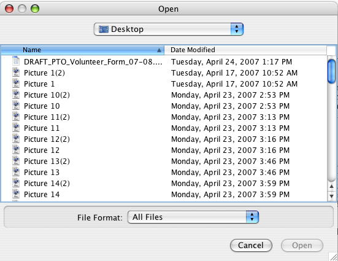

The WorkBench can create a new Data Set, read in a group of images and link each image to a record inside the Data Set, all in one action. The linked images can then be viewed while entering data into the DataSet.
Addition batches of images cannot be imported into an existing Data Set, but individual images can be added to exisint data rows.
Note: The 'Import Images' action is best used when entering data from scanned cards or field notes. Descriptive images can also be linked to existing Data Set records using the 'Image Toggle' button. This is described in the Image Window section of Help.
The WorkBench allows images in jpg, tif, png, gif and bmp formats to be linked within DataSets.
Create a Data Set from images by first clicking the ‘Import Images’ action. The following dialog will appear which allows the images to be selected:

Choose the images to be imported and click 'open'.
The following dialog will appear allowing Columns to be chosen for the new Data Set:
To dialog will open with a list of Data Objects in the 'Fields' window. To view the available Fields for a particular Data Object click on the (arrow) button.
To add a Column:
To remove a Column:
Once the list of Columns is complete click the 'ok' button. The DataSet Properties dialog will display which allows the new DataSet to be named and described:

Once the DataSet has been named, it will open in the Workspace. To view an image click on the (icon) button. An image window will appear displaying the linked image.
Image Controls are described in the Image Window section of help.
Note: It is important to understand that WorkBench does not relocate or store image files within DataSets. WorkBench merely creates a link to the image by remembering where the image is located. WorkBench does create a smaller version, or thumbnail, of the image, but it is not a replacement for the original image and the original image should never be deleted.
To display the images that are linked to the records simply use the xx button to open an image window, then select a record to display its linked image in the image window. Selecting the xx button again will close the image window.
Quick Tip for Creating a DataSet that includes Images